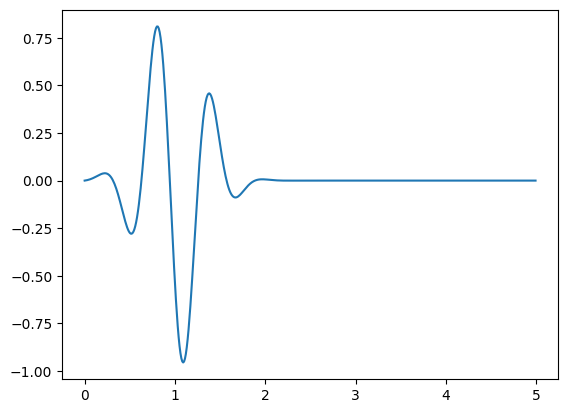

3.7. Bent electromagnetic 3d waveguide with PML#
by M. Wess, 2025#
This Notebook is part of the dualcellspaces documentation for the addon package implementing the Dual Cell method in NGSolve.
#import libraries
from ngsolve import *
import dualcellspaces as dcs
from ngsolve.webgui import Draw
import numpy as np
import matplotlib.pyplot as pl
#set geometry parameters
l_in = 0.2 # length of straight inflow waveguide
l_out = 0.2 # length of straight outflow waveguide
l_pml = 0.6 # length of pml at in- and outflow
d = 0.5 # width of waveguide
h = 0.2 # height of waveguide
rad = 0.3 # radius of bend
# problem parameters
c = 5
t0 = 1
omega = 10
sigma = 10 # pml damping
# discretization parameters
maxh = 0.1 # mesh size
order = 2 # polynomial order
# create geometry with occ
from netgen.occ import *
wps = []
wps.append(MoveTo(-l_pml,-d/2).Rectangle(l_pml,d))
wps.append(MoveTo(0,-d/2).Rectangle(l_in,d))
wps.append(MoveTo(l_in,-d/2).Arc(d+rad,90).Rotate(90).Line(d).Rotate(90).Arc(rad,-90).Rotate(90).Line(d))
wps.append(MoveTo(l_in+rad,d/2+rad).Rectangle(d,l_out))
wps.append(MoveTo(l_in+rad,d/2+rad+l_out).Rectangle(d,l_pml))
mats = ["pmlx","wg","bend","wg","pmly"]
parts = []
for wp,mat in zip(wps,mats):
parts.append(wp.Face().Extrude(h).mat(mat))
#Draw(parts[-1])
wg3d = Glue(parts)
wg3d.faces.Nearest(Pnt(0,0,h/2)).name = "inflow"
wg3d.faces.Nearest(Pnt(l_in,0,h/2)).name = "sensor_in"
wg3d.faces.Nearest(Pnt(l_in+rad,d/2+l_out+rad,h/2)).name = "outflow"
wg3d.faces.Nearest(Pnt(l_in+rad,d/2+rad,h/2)).name = "sensor_out"
Draw(wg3d)
WebGLScene
# generate mesh
geo = OCCGeometry(wg3d)
mesh = Mesh(geo.GenerateMesh(maxh=maxh))
mesh.Curve(order)
Draw(mesh)
WebGLScene
#define spaces
fes_E = dcs.HCurlDualCells3D(mesh, order=order,dirichlet = mesh.Boundaries('default|inflow'))
fes_H = dcs.HCurlPrimalCells3D(mesh,order=order)
fes_E_pml = dcs.HCurlDualCells3D(mesh, order=order,dirichlet = mesh.Boundaries('default|inflow')) # definedon not yet implemented
fes_H_pml = dcs.HCurlPrimalCells3D(mesh,order=order)
fes = fes_E*fes_E_pml*fes_H*fes_H_pml
print("total DoFs:",fes.ndof)
print("primary DoFs:",fes_E.ndof,", ",fes_H.ndof)
gf = GridFunction(fes)
gfE,gfE_, gfH,gfH_ = gf.components
#integral symbols with special integration rules
dxE = dx(intrules=fes_E.GetIntegrationRules())
dsE = ds(intrules=fes_E.GetIntegrationRules(),definedon=mesh.Boundaries('inflow'))
dxH = dx(intrules=fes_H.GetIntegrationRules())
dxw = dx(intrules=dcs.GetIntegrationRules(2*order+4))
dSw = dx(element_boundary=True,intrules=dcs.GetIntegrationRules(2*order+4))
#mixed bilinear form
E,dE = fes_E.TnT()
H,dH = fes_H.TnT()
normal = specialcf.normal(3)
bf_mixed = BilinearForm(E*curl(dH)*dxw+E*Cross(dH,normal)*dSw, geom_free=True).Assemble().mat
total DoFs: 1312668
primary DoFs: 333030 , 323304
innerdofs_E = fes_E.GetDofs(mesh.Materials('default'))
pmldofs_E = fes_E.GetDofs(mesh.Materials('pmlx|pmly')) & ~fes_E.GetDofs(mesh.Boundaries('default|inflow'))
pmldofs_H = fes_H.GetDofs(mesh.Materials('pmlx|pmly'))
#prepare mass operators
with TaskManager():
# (inverse) mass
massH_inv = fes_H.Mass(1).Inverse()
bfm_E = fes_E.Mass(1)
massE_inv = bfm_E.Inverse(freedofs=fes_E.FreeDofs())
# inverse mass in pml only
massH_inv_pml = fes_H.Mass(1).Inverse(freedofs = pmldofs_H)
massE_inv_pml = fes_E.Mass(1).Inverse(freedofs = pmldofs_E)
# surface mass for dirichlet data
massE_surf = BilinearForm(E.Trace()*dE.Trace()*dsE).Assemble().mat
massE_surf = massE_surf.DeleteZeroElements(1e-8)
massE_surf_inv = massE_surf.Inverse(inverse='sparsecholesky',freedofs=fes_E.GetDofs(mesh.Boundaries('inflow')))
# mass matrices for pml damping
matcfy = CF((-1,0,0,0,1,0,0,0,-1))
matcfx = CF((1,0,0,0,-1,0,0,0,-1))
massH_damp = fes_H.Mass(mesh.MaterialCF({"default" : 0*Id(3), "pmlx": matcfx, "pmly": matcfy}))
massE_damp = fes_E.Mass(mesh.MaterialCF({"default" : 0*Id(3), "pmlx": matcfx, "pmly": matcfy}))
matcfy2 = CF((0,0,0,0,1,0,0,0,0))
matcfx2 = CF((1,0,0,0,0,0,0,0,0))
massH_x = fes_H.Mass(mesh.MaterialCF({"default" : 0*Id(3), "pmlx": matcfx2, "pmly": matcfy2}))
massE_x = fes_E.Mass(mesh.MaterialCF({"default" : 0*Id(3), "pmlx": matcfx2, "pmly": matcfy2}))
#dirichlet data
ply = pi/d
gfe=GridFunction(fes_E)
n = 1
lfr = LinearForm(InnerProduct(CF((0,0,cos(n*y*ply))),dE.Trace())*dsE).Assemble().vec
gfe.vec.data = massE_surf_inv*lfr
#print(gfe.vec)
#BoundaryProj = Projector(fes_E.GetDofs(mesh.Boundaries('inflow')),True)
Draw(gfe)
#rhsEfuncscal = lambda t: exp(-c*(t0-t)**2)*sin(omega*t)
rhsEfunc = lambda t: exp(-c*(t0-t)**2)*sin(omega*t)*gfe.vec
#rhsEfunc = lambda t: exp(-c*(t<t0)*(t0-t)**2)*sin(n*omega*t)*gfe.vec
#rhsEfuncscal = lambda t: exp(-c*IfPos(t0-t,1,0)*(t0-t)**2)*sin(n*omega*t)
#rhsEfunc = lambda t: 0*gfe.vec
#rhsEfunc = lambda t: sin(n*omega*t)*gfe.vec
#rhsEfuncscal = lambda t: sin(n*omega*t)
#visualize dirichlet data over time
ts = np.arange(0,5,0.01)
pl.plot(ts,np.exp(-c*(t0-ts)**2)*np.sin(omega*ts))
#pl.plot(ts,np.sin(omega*ts))
pl.show()

# estimate cfl condition using power iteration
def estimate_tau(mat, maxsteps = 2000, tol = 1e-9):
vec = mat.CreateColVector()
vec.SetRandom()
vec*=1/vec.Norm()
tmp = vec.CreateVector()
lam = 0
for i in range(maxsteps):
#print(i,end='\r')
tmp.data = mat * vec
lamnew = InnerProduct(tmp,vec)
tau = 2/sqrt(lamnew)
n = tmp.Norm()
res = (tmp-lam*vec).Norm()/lamnew/n
#print(res)
tmp *= 1/n
if res<tol: return tau
vec.data = tmp
lam = lamnew
print("did not converge, last res = ",res)
return tau
tau = estimate_tau(massE_inv@bf_mixed.T@massH_inv@bf_mixed)
tau *= 0.95
print("estimated tau = ", tau)
estimated tau = 0.0010338055272401726
#Draw solution
#scenee = Draw (gfE.Operator("altshape")[2], mesh, "E", order=2, draw_surf=False, clipping={"y":0, "z":-1},
# min=-0.5,max=0.5,autoscale=False,points=dcs.GetWebGuiPoints(2),
# settings = {"Objects" : {"Clipping Plane" : True}}, euler_angles=[0,0,0])
# or save solution in multivector for animation
gfE_anim = GridFunction(fes_E,multidim=0)
from time import time
drawevery = int(0.2/tau)
tend = 3
t = 0.
i = 0
gfH.vec[:]=0
gfE.vec[:]=0
gfH_.vec[:]=0
gfE_.vec[:]=0
tmpE = gfE.vec.CreateVector()
tmpE_ = gfE.vec.CreateVector()
tmpH = gfH.vec.CreateVector()
tmpH_ = gfH.vec.CreateVector()
now = time()
timepassed = 0
with TaskManager():
gfH.vec.data += -tau/2*massH_inv@bf_mixed*gfE.vec #initial data in pml is zero, so first step does not need damping terms
while t<tend:
t+=tau
i+=1
tmpE.data = tau*(bf_mixed.T*gfH.vec+sigma*(massE_damp*gfE.vec-massE_x*gfE_.vec))+bfm_E*(gfE.vec-rhsEfunc(t))
tmpE_.data = massE_x*gfE.vec-massE_x*gfE_.vec
gfE_.vec.data += tau*sigma*massE_inv_pml*tmpE_
gfE.vec.data = rhsEfunc(t)
gfE.vec.data += massE_inv*tmpE
tmpH.data = -bf_mixed*gfE.vec+sigma*(massH_damp*gfH.vec-massH_x*gfH_.vec)
tmpH_.data = massH_x*gfH.vec-massH_x*gfH_.vec
gfH_.vec.data += tau*sigma*massH_inv_pml*tmpH_
gfH.vec.data += tau*massH_inv*tmpH
if i%drawevery == 0:
timepassed += time()-now
#scenee.Redraw() # for immediate drawing
gfE_anim.AddMultiDimComponent(gfE.vec) #for saving to multidim function
#print("\r time = {}, step = {}, {:e} dofs/s".format(t,i,i*fes.ndof/timepassed),end="")
now = time()
---------------------------------------------------------------------------
KeyboardInterrupt Traceback (most recent call last)
Cell In[11], line 39
36 tmpE_.data = massE_x*gfE.vec-massE_x*gfE_.vec
37 gfE_.vec.data += tau*sigma*massE_inv_pml*tmpE_
---> 39 gfE.vec.data = rhsEfunc(t)
40 gfE.vec.data += massE_inv*tmpE
42 tmpH.data = -bf_mixed*gfE.vec+sigma*(massH_damp*gfH.vec-massH_x*gfH_.vec)
Cell In[8], line 13, in <lambda>(t)
11 Draw(gfe)
12 #rhsEfuncscal = lambda t: exp(-c*(t0-t)**2)*sin(omega*t)
---> 13 rhsEfunc = lambda t: exp(-c*(t0-t)**2)*sin(omega*t)*gfe.vec
15 #rhsEfunc = lambda t: exp(-c*(t<t0)*(t0-t)**2)*sin(n*omega*t)*gfe.vec
16 #rhsEfuncscal = lambda t: exp(-c*IfPos(t0-t,1,0)*(t0-t)**2)*sin(n*omega*t)
17 #rhsEfunc = lambda t: 0*gfe.vec
(...)
23
24 #visualize dirichlet data over time
25 ts = np.arange(0,5,0.01)
KeyboardInterrupt:
print("finshed with an average of {:e} dofs/s".format(i*fes.ndof/timepassed),end="")
Draw (gfE_anim,
mesh, "E", order=2, draw_surf=False, clipping={"y":0, "z":-1},
animate = True,
min=-0.5,max=0.5,autoscale=False,points=dcs.GetWebGuiPoints(2),
settings = {"eval": 2, "Objects" : {"Clipping Plane" : True}}, euler_angles=[0,0,0]);
finshed with an average of 4.571928e+07 dofs/s